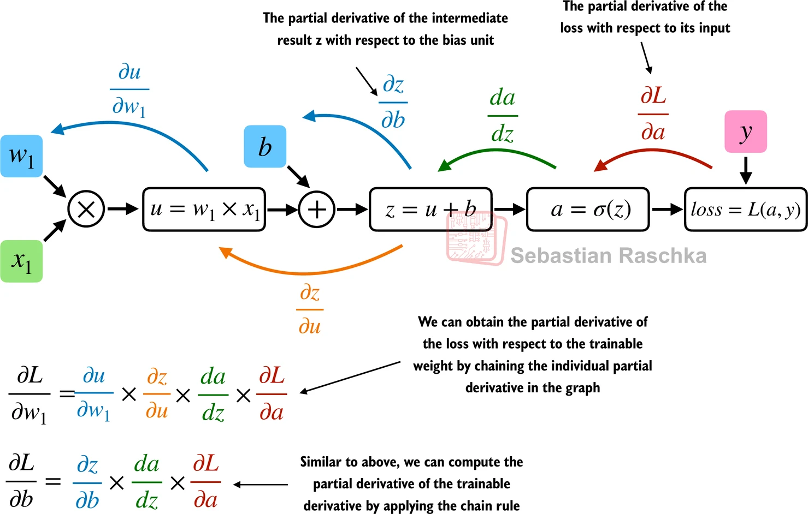

import torch
print(torch.__version__)2.6.0+cpuDecember 2, 2025
This notebook walk through the implementation of a multilayer neural network using Pytorch. This is inspired by the book from Sebastian Rascha on a Building Large Language Model.
References :
False Looking in links: /opt/pip_cache Collecting torchinfo Downloading torchinfo-1.8.0-py3-none-any.whl.metadata (21 kB) Downloading torchinfo-1.8.0-py3-none-any.whl (23 kB) Installing collected packages: torchinfo Successfully installed torchinfo-1.8.0 WARNING: Running pip as the 'root' user can result in broken permissions and conflicting behaviour with the system package manager, possibly rendering your system unusable. It is recommended to use a virtual environment instead: https://pip.pypa.io/warnings/venv. Use the --root-user-action option if you know what you are doing and want to suppress this warning.
# Create the dataloaders
from torch.utils.data import DataLoader
train_loader = DataLoader(
train_ds,
batch_size=2,
shuffle=True, # shuffle the data to avoid any order bias
drop_last=True # drop last batch if it is not full - this is to make sure that the batch size is always the same
)
test_loader = DataLoader(
test_ds,
batch_size=2,
shuffle=False,
drop_last=True
)
for idx, (x, y) in enumerate(train_loader):
print(f"Batch {idx+1}:", x, y)Batch 1: tensor([[-1.2000, 3.1000],
[-0.9000, 2.9000]]) tensor([0, 0])
Batch 2: tensor([[-0.5000, 2.6000],
[ 2.3000, -1.1000]]) tensor([0, 1])
picture by Sebastian Raschka
# Simplete multi-layer perceptron with two hidden layers
class NeuralNetwork(torch.nn.Module):
def __init__(self, n_features, n_output):
super().__init__()
self.layers = torch.nn.Sequential(
# 1st hidden layer
torch.nn.Linear(n_features, 30), # Linear layer: multiplies the input with the weight matrix and adds the bias (i.e. feedfoward)
torch.nn.ReLU(), # non-linear activation function
# 2nd hidden layer
torch.nn.Linear(30, 20), #number of output nodes of one hidden layer has to match the number of inputs of the next layer.
torch.nn.ReLU(),
# Output layer
torch.nn.Linear(20, n_output)
)
# Define how the input data passes through the network
def forward(self, x):
logits = self.layers(x) # output of the last layer is the logits
return logits
NeuralNetwork(
(layers): Sequential(
(0): Linear(in_features=2, out_features=30, bias=True)
(1): ReLU()
(2): Linear(in_features=30, out_features=20, bias=True)
(3): ReLU()
(4): Linear(in_features=20, out_features=2, bias=True)
)
)# First install: pip install torchinfo
from torchinfo import summary
# Visualize your model
summary(model, input_size=(1, 2)) # batch_size=1, features=2
# Or with more details
summary(model, input_size=(1, 2),
col_names=["input_size", "output_size", "num_params", "trainable"],
row_settings=["var_names"])============================================================================================================================================
Layer (type (var_name)) Input Shape Output Shape Param # Trainable
============================================================================================================================================
NeuralNetwork (NeuralNetwork) [1, 2] [1, 2] -- True
├─Sequential (layers) [1, 2] [1, 2] -- True
│ └─Linear (0) [1, 2] [1, 30] 90 True
│ └─ReLU (1) [1, 30] [1, 30] -- --
│ └─Linear (2) [1, 30] [1, 20] 620 True
│ └─ReLU (3) [1, 20] [1, 20] -- --
│ └─Linear (4) [1, 20] [1, 2] 42 True
============================================================================================================================================
Total params: 752
Trainable params: 752
Non-trainable params: 0
Total mult-adds (M): 0.00
============================================================================================================================================
Input size (MB): 0.00
Forward/backward pass size (MB): 0.00
Params size (MB): 0.00
Estimated Total Size (MB): 0.00
============================================================================================================================================Total number of trainable model parameters: 752Above you have the total number of trainable parameters (.requires_grad). Those parameters will be updated during training.
# Training loop
import torch.nn.functional as F
torch.manual_seed(123)
model = NeuralNetwork(2, 2)
optimizer = torch.optim.SGD(model.parameters(), lr=0.5)
num_epochs = 3
for epoch in range(num_epochs):
model.train()
for batch_idx, (x, y) in enumerate(train_loader):
# Forward pass
logits = model(x) # features
loss = F.cross_entropy(logits, y) #loss function
# Backward pass
optimizer.zero_grad()
loss.backward() # compute the gradients of all the leaf nodes in the graph. That is the gradient of the loss with respect to the model parameters
optimizer.step()
# Print progress
print(f"Epoch: {epoch+1:03d}/{num_epochs:03d}"
f" | Batch {batch_idx:03d}/{len(train_loader):03d}"
f" | Train/Val Loss: {loss:.2f}")
model.eval()
Epoch: 001/003 | Batch 000/002 | Train/Val Loss: 0.74
Epoch: 001/003 | Batch 000/001 | Train/Val Loss: 0.64
Epoch: 001/003 | Batch 001/002 | Train/Val Loss: 0.65
Epoch: 001/003 | Batch 000/001 | Train/Val Loss: 0.23
Epoch: 002/003 | Batch 000/002 | Train/Val Loss: 0.04
Epoch: 002/003 | Batch 000/001 | Train/Val Loss: 0.22
Epoch: 002/003 | Batch 001/002 | Train/Val Loss: 0.24
Epoch: 002/003 | Batch 000/001 | Train/Val Loss: 0.09
Epoch: 003/003 | Batch 000/002 | Train/Val Loss: 0.01
Epoch: 003/003 | Batch 000/001 | Train/Val Loss: 0.09
Epoch: 003/003 | Batch 001/002 | Train/Val Loss: 0.12
Epoch: 003/003 | Batch 000/001 | Train/Val Loss: 0.04tensor([[ 2.4492, -3.6364],
[ 2.1517, -3.2480],
[ 1.7333, -2.7008],
[-1.1560, 1.1537],
[-1.3317, 1.3456]])tensor([[0.9977, 0.0023],
[0.9955, 0.0045],
[0.9883, 0.0117],
[0.0903, 0.9097],
[0.0643, 0.9357]])# Lets calculate the accuracy
def compute_accuracy(model, dataloader):
model.eval()
correct = 0.0
total_examples = 0
for idx, (features, labels) in enumerate(dataloader):
with torch.no_grad():
logits = model(features)
preds = torch.argmax(logits, dim=1)
compare = labels == preds # return a tensor of true/falses value depending if labels match
correct += torch.sum(compare) # count the number of true values
total_examples += len(compare)
return (correct / total_examples).item() # value between 0 and 1. .item() returns the value of the tensor as a python float